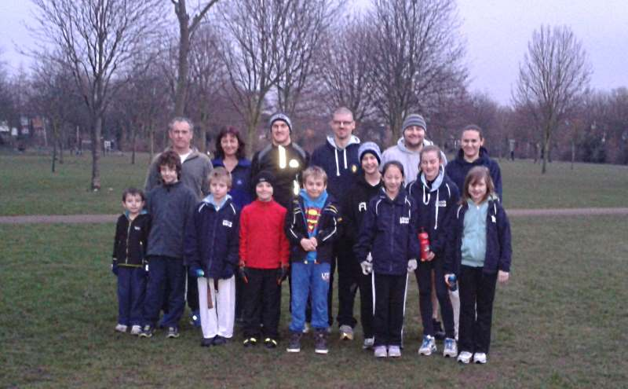

2nd annual Kangeiko
The Japanese concept of ‘Kangeiko’ (literally, coldest time of the year training) seeks to bring together the coldness of the weather with martial training/spirit.

Trying to communicate this through to our members we add our own unique twist to help make our members well-rounded individuals.
The message is simple: The small sacrifice of a warm bed, house and early 7am meet in the park allows us to at least empathise in a small way with those who may not enjoy the luxuries we take for granted. The running and training for an hour allows us to align with the traditional Kangeiko.
Last year we used our last day for a well needed food drop for charity. This year we reach out to our community and donate cooked goods, thanks to a 9 year old member’s initiative. (More to follow on this)
The Bunbu Dojo Karate School is once again proud to be a different type of commercial sports school: One to which its members can contribute and one in which they can develop positive moral values.